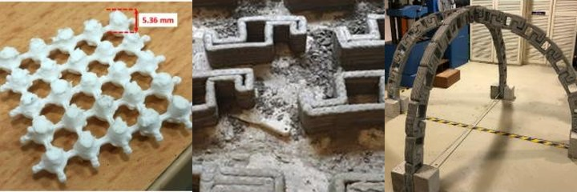

This is one of three linked projects on architected polymer–concrete composites, developed with Professor Claudia Ostertag (Civil and Environmental Engineering): octet-truss engineered concrete · polymer lattice-reinforced concrete · polymer–PCM lattice concrete.
The common idea is to borrow from the mechanics of architected cellular materials. Stretching-dominated lattices, such as the octet truss, carry load axially through their struts and so are far stiffer and stronger for their weight than foams with random pores. We use that geometry in three ways: as the concrete itself, as a 3D-printed polymer reinforcement inside concrete, and as a hollow printed container that both reinforces concrete and stores heat.
Ultra-high-performance concrete is very strong in compression but brittle, and it becomes more brittle as its strength rises. Brian Salazar and Parham Aghdasi embedded 3D-printed octet-truss lattices of PLA or ABS polymer in ultra-high-performance concrete, at two reinforcement ratios (19.2% and 33.7%), and tested the composites in compression and four-point bending. The lattices turned a brittle material into a ductile one. Every flexural specimen showed multiple cracking and strain hardening up to peak load, and all specimens softened smoothly in compression. Raising the PLA reinforcement ratio increased the average flexural peak load by 38%, while raising the ABS ratio reduced compressive strength by 22%, which shows that reinforcement ratio lets the response be tuned.
A follow-on study compared reinforcement schemes, including polymer lattices, for highly compressible “yielding elements” that protect tunnel linings in squeezing ground. For that application, corrugated metal plates in fiber-reinforced concrete gave the required monotonically rising stress–strain response.
Related work on printed concrete in Singapore. With Alexander Lin and Professor Harn Wei Kua at the National University of Singapore, through the Berkeley Education Alliance for Research in Singapore, we applied the same idea to 3D-printed concrete. Extrusion-printed polymer lattice sheets were interlaced between printed mortar layers, raising ductility, including in mortars that incorporate waste biochar or fly ash. We also designed prismatic interlocking concrete blocks that the simplest gantry printer, with a flat bed, can produce, and assembled them into a compression-dominated arch. This avoids the robotic arms and reconfigurable print beds otherwise needed for overhanging shapes.

Printed polymer lattice sheet for inter-layer reinforcement (left); concrete blocks printed on a gantry printer (center); and an arch assembled from the printed blocks (right). Adapted from Lin et al., Composite Structures 253, 112764 (2020), and Lin et al., Automation in Construction 141, 104467 (2022).
Banner: fused-filament printing of a polymer octet-truss lattice (left) and cross-sections of lattice-reinforced specimens (center and right). Adapted from Salazar et al., Materials & Design 196, 109184 (2020), under a CC BY 4.0 license.
Key publications
[J36] B. Salazar, P. Aghdasi, I.D. Williams, C.P. Ostertag, and H.K. Taylor, “Polymer lattice-reinforcement for enhancing ductility of concrete,” Materials & Design, vol. 196, 109184, 2020. doi:10.1016/j.matdes.2020.109184
[J52] B. Salazar, P. Aghdasi, C.P. Ostertag, and H.K. Taylor, “Highly compressible concrete: the effect of reinforcement design on concrete’s behavior at high strains,” Materials & Design, vol. 230, 111942, 2023. doi:10.1016/j.matdes.2023.111942
[C9] B. Salazar, I. Williams, P. Aghdasi, C. Ostertag, and H. Taylor, “Bending and crack characteristics of polymer lattice-reinforced mortar,” in Proc. International Conference on Polymers in Concrete, Washington, DC, May 2018. doi:10.1007/978-3-319-78175-4_32
[J34] A. Lin, Y.K. Tan, C.-H. Wang, H.W. Kua, and H. Taylor, “Utilization of waste materials in a novel mortar–polymer laminar composite to be applied in construction 3D-printing,” Composite Structures, vol. 253, 112764, 2020. doi:10.1016/j.compstruct.2020.112764
[J47] A. Lin, A. Goel, D.H.A. Wong, C. Yeo, J. Chung, S.D. Pang, C.-H. Wang, H. Taylor, and H.W. Kua, “Compressive load-dominated concrete structures for customized 3D-printing fabrication,” Automation in Construction, vol. 141, 104467, 2022. doi:10.1016/j.autcon.2022.104467